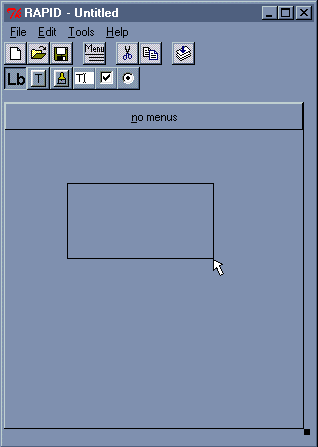
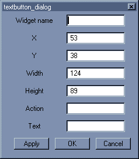
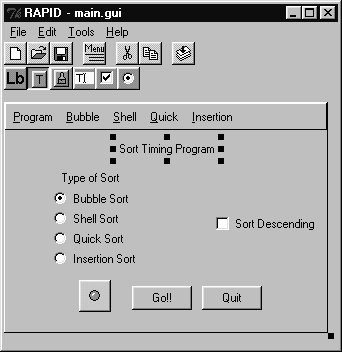
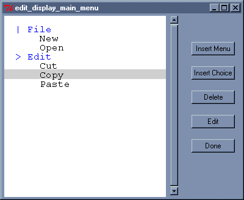
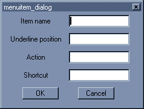
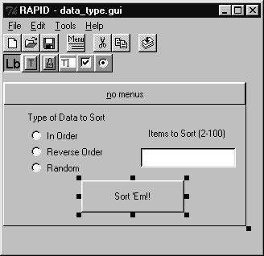

RAPID: A Free, Portable GUI Design Tool
Martin C. Carlisle
Department of Computer Science
2354 Fairchild Dr., Suite 6K41
US Air Force Academy, CO 80840-6234
(719) 333-3590
carlislem@acm.org
Patrick Maes
Department of Computer Science
2354 Fairchild Dr., Suite 6K41
US Air Force Academy, CO 80840-6234
(719) 333-3590
MaesPJ.DFCS@usafa.af.mil
In this paper, we describe RAPID, the Rapid Ada Portable Interface Designer. RAPID is a graphical GUI design tool that allows the user to visually lay out a user interface, and have the Ada code that creates this interface generated automatically. The generated code will run on any platform supported by Tcl/Tk.
Graphical user interfaces, automatic code generation, Tcl/Tk, Ada
More and more, computer programs are becoming increasingly visual. Unfortunately, graphical interface programming tends to be both highly complicated and system dependent. Various languages and graphical user interface (GUI) design tools have been developed to simplify this process. RAPID (the Rapid Ada Portable Interface Designer) is the first free, multi-platform, GUI design tool written entirely in and for Ada. By using the RAPID toolset, the programmer can quickly lay out a user interface through a visual design process, then have the toolset automatically generate Ada code that will create that interface.
Since multi-platform graphical languages already exist, we decided to leverage off what had already been done, rather than implementing a new set of graphical primitives from scratch on several platforms. The two most promising choices were Java [6] and Tcl/Tk [7]. Java has sparked an enormous amount of interest both at universities and in industry. The executables created by a Java compiler can be run (interpreted) on many different platforms. Java also provides significant graphical primitives. For these reasons, many have predicted Java will become the preeminent programming language. In response, the Ada community has targetted compilers to the Java Virtual Machine [2,4]. These compilers allow the programmer to utilize the functionality of the JVM while still retaining the advantages of programming in Ada. Tcl/Tk is available for free on a wide variety of platforms, provides native "look and feel" GUI tools, and is a more mature and stable technology. Since Tcl is a scripting language, it is much easier to test Tcl programs than programs written in a compiled language such as Java. Additionally, the existence of TASH [10], a straight-forward Ada binding to Tcl/Tk, makes it an attractive alternative for Ada programmers. The ease of using Tcl/Tk and TASH led us to choose them as the target for our GUI design tool.
In addition to selecting an existing graphical language, we also borrowed ideas from compilers that enabled us to develop the tool much more quickly, and also to make it much easier to switch the type of code that is output. Section 3 will discuss the toolset, and the features it provides. In Section 4, we describe the development of a simple application using RAPID. Section 5 describes our use of an intermediate language and bootstrapping. Bootstrapping allowed us to generate over 40% of the RAPID code using RAPID itself. A description of how to add new widgets to RAPID is given in Section 6. Finally, in Section 7, we will contrast RAPID with similar work, and provide ideas for further development.
The RAPID toolset consists of 3 programs: RAPID, TASH_FROM_GIF, and CALLED_FROM_TCL. RAPID is the main GUI Designer, which allows the programmer to visually lay out a graphical user interface and have the Ada code for that interface generated automatically. TASH_FROM_GIF allows the programmer to embed GIF images in the code without requiring any external files. CALLED_FROM_TCL is used to generate code that will allow an Ada procedure to be used as a callback on a generated event.
Many widgets have actions associated with them. For example, the programmer may want a certain procedure to be called if a button is pressed. Since the button is implemented using Tcl/Tk primitives, this requires the use of a callback procedure. Registering the callback with Tcl is done automatically for certain events (such as a button push); however, the programmer may wish to add additional event handlers (e.g. a procedure to be called whenever the mouse enters the window). The syntax for these event handlers is relatively awkward, requiring the use of the package Interfaces.C and the Convention pragma. Additionally, all data in Tcl/Tk is stored as a text string. On the callback, this data would need to be converted from a C-style string to the appropriate Ada type. CALLED_FROM_TCL simplifies the programmer’s task by automatically generating the appropriate code to register the callback and do the necessary conversions. Given an input file consisting of Tcl name, Ada command, and argument count triplets, CALLED_FROM_TCL will create an Ada package consisting of functions to serve as intermediaries for the callback, and an exported procedure Generate_Bindings, that, when called, will register these intermediaries.

Figure 1: The main RAPID window.
Figure 1 shows the main window for RAPID. The first row of buttons allows the user to create a new window, open a previous window, save the current window, start the menu editor, or compile the GUI to Ada code. The second row of buttons is used to select what type of widget will be added (currently only text labels, text buttons, picture buttons, text-entry widgets, radio buttons and check boxes are supported, though more are being added. Section 6 describes how you can add your own widgets). After selecting "new" or opening a file, the user can use the left mouse button to click and drag out a new widget (as shown in Figure 1).
When the user releases the left mouse button, a dialog box appears that asks the user to fill in the properties of the new widget. Figure 2 shows an example properties dialog box for a text button. Once this has been filled in, the user can recall this dialog and change the properties of the widget by clicking on it with the right mouse button. In the dialog shown, the location and size of the text button have been automatically filled in, based on the rectangle that was drawn by the user. For this particular widget, the user must specify its name, the text that will appear on the button, and its action (which Ada procedure will be called when the button is pushed). The action should be a fully qualified Ada procedure name (e.g. Edit_Menu.Cut_Choice).

Figure 2: The properties dialog for a text button
For a picture button, the "Text" field would be replaced by a "Picture" field, which would be the name of the GIF file containing the image. A text label widget has the same fields except there is no action. The text entry widget has an action (for when the user presses enter), but no text.
Using the menu editor button from the main toolbar, the user can start the RAPID menu editor. This visual interface is modeled after a Windows-based file browser. Indentation indicates nested items. From this window, the user can insert or delete menu items. An inserted menu item will immediately follow the selected item. Since menus can be nested, this creates some ambiguity. If a submenu is highlighted, should the insertion occur at the same level, or one level deeper? To resolve this ambiguity, each submenu has a symbol to its left indicating whether or not an insertion will occur one level deeper (">"), or at the same level ("|"). In Figure 3, if the user selects "Insert Choice" with "File" selected, the item will be placed on the same level, just before "Edit". Were "Edit" highlighted, the insertion would occur as an item in the "Edit" menu, just before "Cut". The user can toggle which type of insertion will occur by clicking on the symbol.

Figure 3: The RAPID menu editor
When the user opts to insert a menu or choice, a dialog (similar to the one in Figure 4) will pop up, asking the user to specify the text of the menu choice, which character is the shortcut (this character will be underlined when the menu is displayed), if there is a keyboard shortcut (such as Ctrl+X), and what Ada procedure should be called when this item is selected. When the user closes the menu editor, the menu will be updated and redisplayed.

Figure 4: Inserting a menu choice
The RAPID GUI designer allows users to generate a simple graphical user interface without any knowledge of Tcl/Tk programming. Once they are pleased with their design, pushing the compile button will generate all of the necessary Ada code (using Tcl/Tk via the TASH binding) to display the interface, and handle all of the events.
In this section, we describe the development of a sample application using the RAPID toolset. The example we chose was a sorting demonstration that would sort data (in-order, reverse, or random) with various sorting techniques and report the elapsed time of the sort. To demonstrate all of the available widgets, some redundancy was deliberately added to the design.
The parameters for the sort include the type of sort, original order of data, and order of the result. The type of sort was most readily represented by a radio button, and the order of result by a check box. To demonstrate the menu, we also allowed selection of both the type of sort and order from the menu. Starting the sort may be done by using a text button, picture button, or from the menu. The user can terminate the application using either a text button or menu choice. Figure 5 shows the main RAPID window at the completion of the design process.
Figure 5: Sort demo main window
Neither the radio buttons nor the checkbox has an action associated with it. Instead, the values of these widgets are read when the user selects "Go!!". For example, to read the value of "Sort Descending", the following line of code is used:
Checked := Tcl_Utilities.Is_Checked(
Main.Interp,"descending");
Since the radio buttons are grouped, the autogenerated code is more complicated. When laying out the radio buttons, the programmer specifies a group for each. In the widgets package for the main window, for each group, an enumerated type is automatically created and the procedure
Read_Group can then be used to read which choice was selected. Since Ada is strongly typed, this procedure can be overloaded for each group of radio buttons. Following is the line of code used to determine which type of sort was selected (since the variable Which_Sort is declared to be of the appropriate type, the correct Read_Group function is chosen) :Which_Sort := Main_Widgets.Read_Group (
Main.Interp);
The menus duplicate functionality already present in the buttons. Selecting a menu choice should then update the radio buttons and check box as appropriate. The utilities package also provides routines for accomplishing this. A sample from the application is given below:
Tcl_Utilities.Deselect_Box(Main.Interp,
".","descending");
For each of the buttons, a fully-qualified Ada procedure name is specified. This procedure is the action that will be performed when that button is pushed. The procedure should be parameterless. Currently, RAPID will only generate a with clause based on the procedure name, and not examine any arguments. This is not a limitation, as any state needed could be kept in package variables. Also, in this case, the procedure obtains the information it needs by querying the widgets.
Figure 6: Sort demo data type window
After the user starts the sort, a new dialog appears to ask for information about the data to be sorted. Both the type of data to be sorted and the number of items to sort are entered from this screen.
Figure 6 shows this window. Again a radio button group is used to select the type of data to be sorted. A text-entry widget is used to enter the number of items to sort. Text-entry boxes are also allowed to perform an action when the user presses <Enter>. In this case, we chose to have this action be the same as if they pressed the "Sort ‘Em!!" button.
Once the user selects "Sort ‘Em!!", the application will determine what was selected and then perform the operation. As before, the radio button group has an automatically generated procedure to read which was selected. For the text-entry box, the utility package provides a routine for reading the value. An excerpt from the sort procedure is given below:
Which_Data := Data_Widgets.Read_Group(
Main.Interp);
Tcl_Utilities.Get_Text_Entry(
Main.Interp,
".data","count",
Data_Count);
Tcl_Utilities.Destroy_Window(
Main.Interp,".data");
The menu and screen system described were put together in one and one-half hours, as well as writing a shell of the package containing the action procedures. The main procedure requires only three lines of code, and is given below. After generating the window, a default value is given to the radio button group.
with Tcl;
with Tcl.Tk;
with Main;
with Main_Widgets;
procedure Sort_Demo is
begin
Main.Generate_Window(Main.Interp);
Main_Widgets.Set_Button(
Main.Interp, Main_Widgets.Bubble);
Tcl.Tk.Tk_Mainloop;
end Sort_Demo;
The action package contains the procedures described above, and also uses procedures from the provided common dialogs library. The common dialogs library provides procedures for creating an OK box, a Yes/No dialog, a file open or save dialog, and a Quit dialog. The sort demo uses the OK box to display its results and the Quit dialog to ask if users are sure they want to quit when quit is chosen from the menu.
Overall, the total time spent on developing the GUI portion of the application was approximately three hours.
A GUI design tool is a sufficiently complex program that we would like some assistance writing it. In particular, the tool itself has a graphical user interface that could be designed using a similar tool. Just as Pascal was first implemented by writing a compiler in Pascal [11], we decided to use RAPID to develop itself. This "chicken-and-egg" process is referred to as bootstrapping [1]. The first step of this process was to develop an intermediate language for a graphical user interface and the ability to compile this interface to Ada code. Since the intermediate format chosen was a simple text file (unlike most compilers), we were able to write a portion of the GUI using the intermediate language and then compile it. After doing that, we were able to repeatedly use the tool to generate improved versions of itself. Following is a portion of the grammar used by RAPID:
<window> ::= WINDOW <name> <width> <height> <menubar> <widgets> ENDOF WINDOW
<menubar> ::= MENUBAR <menulist> ENDOF MENUBAR | l
<menulist> ::= MENU <submenuinfo> <menulist> ENDOF MENU | ITEM <iteminfo> <menulist> | l
<submenuinfo> ::= <name> <underline> <possible_action>
<possible_action> ::= <action> | l
<iteminfo> ::= <name> <underline> <action> <accelerator>
<accelerator> ::= <accel_key> | l
<widgets> ::= WIDGETS <widgetlist> ENDOF WIDGETS | l
<widgetlist> ::= <widget> <widgetlist> | l
<widget> ::= <picturebutton>|<textbutton>|…
<picturebutton> ::= PICTUREBUTTON <name> <x> <y> <width> <height> <action> <picture>
<textbutton> ::= TEXTBUTTON <name> <x> <y> <width> <height> <action> <text>
Using the above grammar, we wrote the interface for the main RAPID window directly in the intermediate language. Below is a portion of the RAPID main window interface. These 27 lines of the intermediate language compiled to 506 lines of Ada code. Note that whenever we provide a line count, it refers to only non-blank, non-comment lines of code.
WINDOW "." 300 58
MENUBAR
MENU "File" 0
ITEM "New" 0 "File_Menu.New_Choice" Ctrl+N
ITEM "Open" 0 "File_Menu.Open_Choice" Ctrl+O
ITEM "Close" 0 "File_Menu.Close_Choice" Ctrl+F4
ITEM "Save" 0 "File_Menu.Save_Choice" Ctrl+S
ITEM "Save As" 5 "File_Menu.SaveAs_Choice"
ITEM "Exit" 1 "File_Menu.Exit_Choice"
ENDOF MENU
MENU "Tools" 0
ITEM "Compile" 0 "Tools_Menu.Compile_Choice"
ENDOF MENU
ENDOF MENUBAR
WIDGETS
PICTUREBUTTON newButton 0 0 23 23 "File_Menu.New_Choice" "new_gif"
PICTUREBUTTON openButton 23 0 23 23 "File_Menu.Open_Choice" "open_gif"
PICTUREBUTTON saveButton 46 0 23 23 "File_Menu.Save_Choice" "save_gif"
PICTUREBUTTON compileButton 112 0 23 23 "Tools_Menu.Compile_Choice" "compile_gif"
PICTUREBUTTON labelButton 0 25 23 23 "Toolbar.Select_Widget(Toolbar.LABEL)" "label_gif"
PICTUREBUTTON textBButton 23 25 23 23 "Toolbar.Select_Widget(Toolbar.TEXTBUTTON)" "text_button_gif"
PICTUREBUTTON pictureBButton 46 25 23 23 "Toolbar.Select_Widget(Toolbar.PICTUREBUTTON)" "picture_button_gif"
PICTUREBUTTON textEntryButton 69 25 23 23 "Toolbar.Select_Widget(Toolbar.TEXTENTRY)" "text_entry_gif"
PICTUREBUTTON menubutton 79 0 23 23 "Subwindow_Actions.Edit_Menu" "menu_gif"
ENDOF WIDGETS
ENDOF WINDOW
The code length was also reduced using object-oriented techniques. Each widget is part of a GUI widget hierarchy. The methods for each widget include: reading its intermediate form from a file, writing its intermediate form to a file, generating the code for the widget, displaying the widget, and running a properties dialog for the widget. Since different widgets share properties (e.g. all widgets have a location and size), a particular widget method can call the same method in its parent class to perform common functions. For example, the intermediate form of every widget contains its name followed by its location. Reading this portion of the widget’s information in from the file is done in the method for the widget (top-level) class. Each subclass overrides this method and, within the method for the subclass, calls the method of its parent class.
The design of CALLED_FROM_TCL also reduces the amount of handwritten code. As described in the previous section, CALLED_FROM_TCL generates an intermediate function for each callback. Each intermediate function consists only of a call to the Ada command along with the appropriate number of arguments. The arguments are obtained using calls to the overloaded function Argument. Each Argument function takes in the argument list and the number and returns that argument, converted to the appropriate Ada type. By this use of intermediate functions and overloading, the code for the binding is independent of the types of arguments. This means that CALLED_FROM_TCL does not need to do any complicated parsing of specification files, since the compiler will do the work of determining which Argument function should be called for each parameter. As a result, the CALLED_FROM_TCL tool required only 101 lines of Ada code for its implementation. In generating the RAPID GUI Designer, CALLED_FROM_TCL converted a 6 line specification file into 140 lines of Ada code.
Finally, TASH_FROM_GIF simplifies incorporating pictures into the graphical user interface. Starting with a GIF file, this program first converts the GIF file to base 64 format. Given a base 64 encoding of the image, TASH_FROM_GIF will create an Ada package with a single procedure Generate_Image, which loads the image into the Tcl interpreter. Each 23x23 pixel image for a RAPID button yielded approximately 38 lines of Ada code. TASH_FROM_GIF may be used separately if needed, but is automatically called by RAPID for picture buttons.
In combination, these tools automatically generated over 2000 of the more than 5000 lines of code in the RAPID toolset (over 40%). By emphasizing reusability of code and automatic code generation through bootstrapping, we were able to develop the tool far faster than if we had used traditional techniques.
Because the RAPID source is also distributed as freeware, the user of RAPID also has the opportunity to add additional widgets to the tool or increase the functionality of any current widget. As described in the previous section, this process is simplified by using RAPID to extend itself. In this section, we describe the steps necessary to add a new widget to RAPID. Since RAPID uses the TASH binding to Tcl/Tk, it is necessary to have some understanding of Tcl/Tk programming (see [5], e.g.)
The first step is to add the new widget to the tool bar. To accomplish this, we run RAPID and open tool.gui, the GUI specification of RAPID’s main window. We then duplicate an existing button, change its graphic and action, and place it on the toolbar. The action for this new button should open a new dialog box allowing the user to specify the attributes of the widget. This new dialog can be designed by copying the dialog of a similar widget, and modifying it using RAPID.
A new package must be added to the GUI widget class heirarchy to support the operations on the new widget. The use of object orientation allows for a lot of code reuse, and greatly simplifies this task. As an example, consider the following code for a check button:
procedure Read_Widget(
Widget : in out Check_Button;
File : in Ada.Text_Io.File_Type) is
Word : Word_Type;
Last : Natural;
begin -- Read_Widget
Read_Widget(Gui_Widget(Widget),File);
File_Helpers.Get_String(File,
Word,Last);
Widget.Text := new String'(
Word(1..Last));
end Read_Widget;
Since the check button shares most properties with all widgets (location, name, etc.), we can call the parent method, then add the additional value (text). In total, GUI-Widget-Check_Button.adb required only 101 non-blank, non-comment lines of code to implement the 8 methods associated with a widget: Read (from a file), Write (to a file), Generate Ada code, Display, Set Properties (using the dialog box), Apply Properties (from the dialog box), Check Properties (to ensure they are valid), and Dialog Name (return the name of the dialog box).
Any widget within the Tcl/Tk library can be created, no matter how complicated. The programmer need only generate Ada code containing the appropriate Tcl/Tk script required to create the new widget. Probably the most counter-intuitive part of the task is to keep in mind that the Generate method consists of Ada code that produces Ada code. This Ada code must compile without intervention.
After adding the new widget, several other files must be edited to handle the new widget. First, GUI_Enum.ads contains an enumeration type to which the new widget must be added. Widget_IO.adb must be given visibility to the new widget package by adding a "with" clause. Then, the case statement in the Read_Widget procedure must be modified to include the new widget. Also, to keep in line with the philosophy that the RAPID user should not need to know Tcl/Tk, appropriate procedures should be added to the utility package to allow the user to manipulate the widget. In the case of a more complicated widget, such as the radio button, it may make sense to autogenerate these procedures for each instance or group of the widget.
In conclusion, RAPID allows Ada programmers to add a GUI to their programs in a very simple and portable way. The code that is generated will run on any of the many platforms that support Tcl/Tk (including Windows, Macintosh, and Unix machines). Also, the GUI design tool uses a very intuitive visual process to create the desired interface. The portability of the resultant code sets RAPID apart from similar products, such as SAGE-ST [8], the Aonix GUI Builder [2] and the proposed CLAW Application Builder [3] (CLAW also claims to be "portable," but this portability refers to its use with different compilers, not on different platforms).
Since RAPID is freeware and will run on a variety of computers, this makes it an attractive tool for use in an educational setting. At a recent SIGCSE conference, it was pointed out that CS curricula should address human-computer interface issues and visual programming [9]. RAPID provides a good vehicle for exploring these issues with students, and also further demonstrates the utility of Ada both as a commercial-use language and a teaching language.
Additionally, the source for RAPID is available for download via ftp from the Internet (see ftp://ftp.usafa.af.mil/pub/dfcs/carlisle/usafa/rapid/index.html). This provides an opportunity for others to contribute to the product by adding additional widgets or additional functionality to the existing widgets. We also intend to continue to improve the product based on our observations from using it, and input from others. Since RAPID uses the object-oriented features of Ada 95 in its design, adding widgets is a straightforward process consisting of creating a new type and overloading the appropriate methods. The RAPID design process also greatly speeds expansion via bootstrapping and code reuse.
The authors wish to acknowledge Doug Michel and the referees, whose insightful comments improved the final form of this paper.